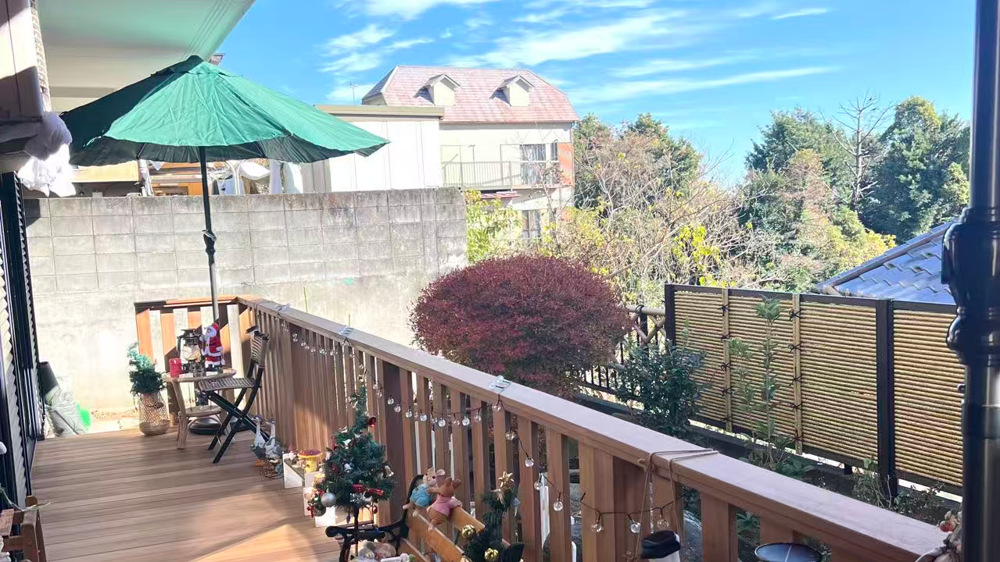

教育と協力の架け橋
最近のニュース
会社紹介
株式会社アジア太平洋協力会は、教育、文化、経済における国際交流の支援を行う機関です。
創立以来20年の実績を持ち、国際交流において重要な人材の育成に尽力してきました。
今後も国際交流を支える活動を継続してまいります。

会社沿革
— 20年の歩みとこれからの挑戦 —
2005年11月
株式会社アジア太平洋協力会を設立し、【東京アジア学友会】日本語学校を運営。大学院進学および就職に特化した指導コースの提供を開始。
2006年1月
株式会社フォーラムエンジニアと業務提携し、理系人材の採用に関するコンサルティング契約を開始。
2007年3月
株式会社ファンケルと業務提携し、店舗スタッフの採用に関するコンサルティング契約を開始。
2009年3月
ファンケルグループの株式会社アテニアとコンサルティング提携を開始し、上海支社設立を支援。
2013年1月
新世界教育グループとのコンサル業務提携を開始。
2014年4月
日東電工グループの株式会社二トムズとコンサル業務提携を開始。
2015年4月
大木グループの上海支社とコンサル業務提携を開始。
2019年10月
英華塾を設立し、大学および大学院進学の指導を開始。